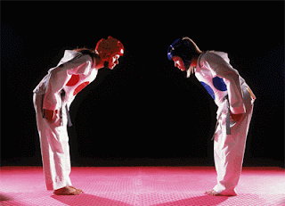

Sobre

VALORES
- Cortesia (Ye Ui): Respeito pelos outros, boas maneiras e comportamento educado.
- Integridade (Yom Chi): Honestidade e moralidade, tanto na prática quanto na vida cotidiana.
- Perseverança (In Nae): Persistência e determinação para superar desafios e alcançar objetivos.
- Autocontrole (Geuk Gi): Capacidade de controlar impulsos e emoções, mantendo a calma e a compostura.
- Espírito Indomável (Baekjul Boolgool): Coragem e determinação inabaláveis, mesmo diante das adversidades.